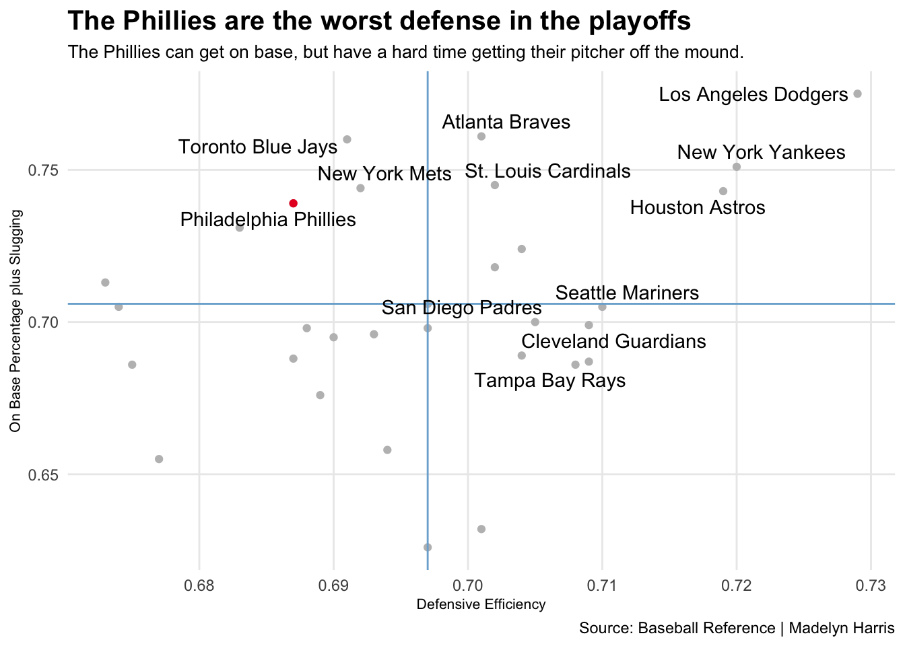

library(tidyverse)── Attaching packages ─────────────────────────────────────── tidyverse 1.3.2 ──
✔ ggplot2 3.3.6 ✔ purrr 0.3.4
✔ tibble 3.1.8 ✔ dplyr 1.0.10
✔ tidyr 1.2.1 ✔ stringr 1.4.1
✔ readr 2.1.2 ✔ forcats 0.5.2
── Conflicts ────────────────────────────────────────── tidyverse_conflicts() ──
✖ dplyr::filter() masks stats::filter()
✖ dplyr::lag() masks stats::lag()library(ggrepel)
mlbf <- read_csv("~/Library/CloudStorage/OneDrive-UniversityofNebraska-Lincoln/Fall 2022/SPMC350/SPMC350 Blog/GRAPHS and DATA/p1 data/fielding22.csv")Rows: 32 Columns: 19
── Column specification ────────────────────────────────────────────────────────
Delimiter: ","
chr (1): Tm
dbl (18): #Fld, RA/G, DefEff, G, GS, CG, Inn, Ch, PO, A, E, DP, Fld%, Rtot, ...
ℹ Use `spec()` to retrieve the full column specification for this data.
ℹ Specify the column types or set `show_col_types = FALSE` to quiet this message.mlbb <- read_csv("~/Library/CloudStorage/OneDrive-UniversityofNebraska-Lincoln/Fall 2022/SPMC350/SPMC350 Blog/GRAPHS and DATA/p1 data/season22.csv")Rows: 32 Columns: 29
── Column specification ────────────────────────────────────────────────────────
Delimiter: ","
chr (1): Tm
dbl (28): #Bat, BatAge, R/G, G, PA, AB, R, H, 2B, 3B, HR, RBI, SB, CS, BB, S...
ℹ Use `spec()` to retrieve the full column specification for this data.
ℹ Specify the column types or set `show_col_types = FALSE` to quiet this message.phif <- mlbf %>%
filter(Tm== "Philadelphia Phillies")
phib <- mlbb %>%
filter(Tm== "Philadelphia Phillies")
combined <- mlbf %>% inner_join(mlbb)Joining, by = c("Tm", "G")combinedphi <- phif %>% inner_join(phib)Joining, by = c("Tm", "G")combinedpo <- combined %>%
filter(Tm == "Tampa Bay Rays" |Tm== "Cleveland Guardians"|Tm== "Seattle Mariners"|Tm== "Toronto Blue Jays"|Tm== "New York Yankees"|Tm== "Houston Astros"|Tm== "Philadelphia Phillies"|Tm== "St. Louis Cardinals"|Tm== "Atlanta Braves"|Tm== "San Diego Padres"|Tm== "New York Mets"|Tm== "Los Angeles Dodgers")
ggplot()+
geom_point(
data= combined,
aes(
x= DefEff,
y= OPS),
color= "gray") +
geom_point(
data= combinedphi,
aes(
x= DefEff,
y= OPS),
color= "#E81828")+
geom_vline(xintercept = .697, color= "#7BAFD4") +
geom_hline(yintercept = .706, color = "#7BAFD4") +
geom_text_repel(
data= combinedpo,
aes(x= DefEff, y=OPS, label= Tm))+
theme_minimal() +
theme(
plot.title = element_text(size = 15, face = "bold"),
axis.title = element_text(size = 8),
plot.subtitle = element_text(size=10),
panel.grid.minor = element_blank()
) +
labs(
x="Defensive Efficiency",
y="On Base Percentage plus Slugging",
title="The Phillies are the worst defense in the playoffs",
subtitle="The Phillies can get on base, but have a hard time getting their pitcher off the mound.",
caption="Source: Baseball Reference | Madelyn Harris"
)